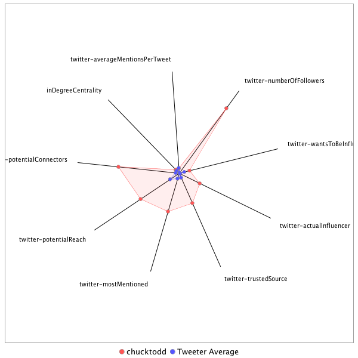

This tweeter has been identified as an influencer. Its target audience and hashtag and word usage are analyzed below.
Basic Statistics
Number of direct followers 1.68365e+06 The peak number of followers that the tweeter had during any time period. Number of retweeters 98 Number of agents that retweeted the key influencer. Number of secondary followers 9701706 The sum of the followers of those who retweeted the key influencer.
Measure Values of Other Influencers node versus Tweeter Average
This compares the measure values of the key influencer with the average values across all tweeters. For each measure line, the center-point means zero and the end-point means the maximum score across all tweeters.

Where was the influencer?
The agent is not recorded as being in any locations. Either he tweeted without geo-tags or we have no information about the tweets he sent.
The agent and retweeters were in 16 different locations.

What hashtags did the influencer use?
This displays the top ranked hashtags that the influencer and its retweeters used.
Rank hashtag Count 1 Comey 287 2 mtal 253 3 BREAKING 224 4 AHCA 223 5 adopt 220 6 GA06 177 7 AdoptDontShop 170 8 Trump 169 9 dog 169 10 CNNsotu 165 11 AMR 147 12 Russia 130 13 VAGov 118 14 cat 102 15 ge2017 102 16 ThisIsGoingWell 95 17 NYC 92 18 MTPDaily 89 19 Manchester 89 20 rescue 88 21 ParisAgreement 85 22 ComeyHearing 79 23 foster 79 24 TheBachelorette 77 25 Hardball 68 26 MTP 67 27 Nats 66 28 JamesComey 61 29 covfefe 61 30 Iran 59 31 CATS 58 32 txlege 58 33 Qatar 57 34 ComeyFiring 54 35 LondonBridge 49 36 dogs 49 37 trumprussia 49 38 FF 48 39 Israel 47 40 MTpol 47 41 SCOTUS 47 42 FBIDirector 46 43 ComeyTestimony 44 44 MemorialDay 42 45 Syria 41 46 CA 37 47 Obamacare 37 48 ComeyDay 35 49 WhiteHouse 35 50 GrenfellTower 34 51 TBT 34 52 sallyyates 34 53 FBI 32 54 ISIS 32 55 gapol 32 56 PPLSummit 31 57 dogsoftwitter 31 58 fakenews 31 59 travelban 31 60 NATO 30 61 SOFIC 30 62 ShameonNBC 30 63 climatechange 30 64 CAPIdeas 29 65 Caps 29 66 Florida 29 67 NorthKorea 29 68 DonaldTrump 28 69 PLEDGE 28 70 RussiaGate 28 71 SC05 28 72 bbcelection 28 73 ParisClimateDeal 27 74 CongressionalBaseballGame 26 75 ManchesterBombing 26 76 NBAFinals 26 77 China 25 78 JeffSessions 25 79 Kitty 25 80 NBC4DC 25 81 OTD 25 82 TrumpCare 25 83 MemorialDayWeekend 24 84 Paris 24 85 RexTillerson 24 86 snl 24 87 ACAwards 23 88 SessionsHearing 23 89 US 23 90 Alexandria 22 91 LOVE 22 92 Tillerson 22 93 odd 22 94 202Live 21 95 Afghanistan 21 96 London 21 97 abq 21 98 DC 20 99 MacronLeaks 20 100 Venezuela 20
Tweet List
This displays all of the tweets of the influencer ordered from earliest to latest. Click on a tweet to see its status in Twitter.
Number Tweet ID Date Message 1 859442658413920257 2017-05-02 12:21:12-04 Yet another norm breaker today w/POTUS using Air Force football team as a backdrop for an overtly political speech. 2 860199481882664960 2017-05-04 14:28:32-04 How is a public celebration of a bill that is only a third of the way to passage a good idea? To say this is premature is an understatement 3 862711443032027138 2017-05-11 12:50:11-04 First excerpts of the @LesterHoltNBC sit down with @realDonaldTrump are airing on NBC in 2 mins. 4 864634353602711552 2017-05-16 20:11:08-04 Montana special next week could have a big impact on how Cap Hill GOPers decide to spend their summer https://t.co/1cP6AdxTmO 5 859442862559117312 2017-05-02 12:22:00-04 It's a reminder, POTUS has brought more style changes to the presidency (think rhetoric and norm breaking) than he has in actual substance 6 869625114987548673 2017-05-30 14:42:38-04 Well, that wasn't very productive. 7 867765108726001668 2017-05-25 11:31:38-04 I should claim to be stunned by the lack of courage by elected House GOPers to denounce what happened in MT. Political expediency vs decency 8 869621238771200000 2017-05-30 14:27:14-04 They had parts of 4 days to get the Kushner story straight and WH has decided not to clarify anything or offer much of an altern explanation 9 867553262563708928 2017-05-24 21:29:50-04 Our politics is beyond broken. A) this shouldn't be seen as a successful strategy. B) paid professionals should be ashamed exploiting it https://t.co/Jprp5wzD31 10 869622051857989638 2017-05-30 14:30:28-04 What's particularly striking about WH decision to no longer come up with a detailed Kushner explainer, the early Syria spin has faded 11 875017745351487491 2017-06-14 11:51:02-04 Hope most folks realize we have a toxic political culture and that attempting to exploit today for political gain will only poison us more 12 873259620663480320 2017-06-09 15:24:52-04 Among the dumber ideas I've seen in crisis management is to make the existence of recordings a game show style mystery. 13 874666968481243136 2017-06-13 12:37:10-04 The real test of whether an elected official cares about 1st amendment is whether they'll defend it when it's INCONVENIENT. So far so bad https://t.co/l6KzME2Ti3 14 874251292864065536 2017-06-12 09:05:25-04 Is this really the plan? Character assassinate someone who made a career upholding the rule of law. https://t.co/XwRWttAkv4 15 872951771244752902 2017-06-08 19:01:35-04 Hope folks who keep saying it was a "good day" for X or Y realize that nothing about today was good for anyone, period. 16 873256570435534851 2017-06-09 15:12:45-04 Many NATO nations breathing sigh of relief now that @POTUS has said in public that he's committed to Article 5, which he just did. 17 874676990187634689 2017-06-13 13:16:59-04 Miss you now more than ever. https://t.co/h4ASCBy1wS 18 874252488576204802 2017-06-12 09:10:10-04 The paid political professionals advocating this are as disgusting as KG was for doing it. https://t.co/CCHQ1FjlCi 19 873253492814753794 2017-06-09 15:00:31-04 There is a major disagreement on how to deal with this Gulf crisis between Tillerson and @POTUS. This is stunning https://t.co/VzCOWBzxBw 20 875161465711452160 2017-06-14 21:22:07-04 RT @rorycooper: If everyone could take the energy of one unnecessary tweet and turn it into a prayer right now... https://t.co/u3swjkaomd 21 875160503047401472 2017-06-14 21:18:18-04 RT @KassyDillon: This is David Bailey, the Capitol Police officer who this morning took a bullet and continued running to help Rep. Scalise… 22 875107723611865092 2017-06-14 17:48:34-04 RT @MeetThePress: We've been in a tinderbox of constantly escalating rhetoric for far too long: https://t.co/pvXwnXzifC #MTPDaily 23 875105198187974657 2017-06-14 17:38:32-04 RT @MeetThePress: .@jahimes: "As leaders, we are responsible for trying to set as civil and constructive a tone as we can." #MTPDaily 24 875105169956114432 2017-06-14 17:38:25-04 RT @MeetThePress: .@RepMcSally: "The best thing [political leaders] can do right now is continue to do our job...We cannot be hiding in a b… 25 875101020753473536 2017-06-14 17:21:56-04 RT @MeetThePress: .@kasie describes the scene at the Capitol after today's shooting: "It has been a very emotional day." #MTPDaily https://… 26 875043649477894145 2017-06-14 13:33:58-04 RT @NickRiccardi: I'd like to see someone develop a formula expressing the rate of twitter horribleness in the hours after a tragedy 27 875024550827831297 2017-06-14 12:18:04-04 RT @Bharper3407: My thoughts & prayers are w/ the victims & their families effected by the senseless act of violence at the Congressional B… 28 875021552017965056 2017-06-14 12:06:09-04 RT @CesarConda: The baseball teams should be bipartisan, instead of GOP vs Dem https://t.co/P3hFx4NHwS 29 875020971509510145 2017-06-14 12:03:51-04 RT @frankthorp: NEW: @BernieSanders Stmt on alleged shooter being a volunteer for his presidential campaign --> https://t.co/1o0UOWpAtg 30 875019094789115904 2017-06-14 11:56:23-04 RT @costareports: Rep. Brian Fitzpatrick (R-Pa.), a fmr FBI agent, tells me "the game should go on, ESPN should broadcast it live, and the… 31 875016742535405569 2017-06-14 11:47:03-04 RT @posglen: @dphaw Neither "side" does this. Crazy individuals do it. 32 874972823869169665 2017-06-14 08:52:32-04 RT @jpodhoretz: Yes. https://t.co/u2m7PjgSFp 33 874970531715575808 2017-06-14 08:43:25-04 RT @alivitali: "Had they not been there it would've been a massacre," @RandPaul says on @msnbc of Capitol Police presence at baseball field. 34 874962999970344960 2017-06-14 08:13:29-04 RT @TimAlberta: No hot takes please; just say a prayer for Scalise and others who were shot 35 874813778436796416 2017-06-13 22:20:32-04 RT @jmartNYT: And on his support from teachers unions & leadership on Va smoking ban in restaurants https://t.co/ySrojVX2wZ 36 874813015371255808 2017-06-13 22:17:30-04 RT @ForecasterEnten: @PatrickRuffini Didn't our friend Mr. @billkristol hint at such a possibility in the past 48 hours? 37 874801303473586176 2017-06-13 21:30:58-04 RT @Bencjacobs: The idea that the former chair of the RNC could lose a statewide primary to a guy who calls people "cucks" is truly remarka… 38 874713378085851137 2017-06-13 15:41:35-04 One way to de-escalate suspicion is to be open and transparent; hiding behind a form of privilege only raises more questions. Mistake 39 874666638112690180 2017-06-13 12:35:51-04 RT @HallieJackson: Well this is a BFD. Conditions of hall interviews, per @kasie, are prior approval from senator (!) AND Rules Committee.… 40 874666627203256321 2017-06-13 12:35:49-04 RT @HallieJackson: Why should you care? Because this isn't about press whining. --> https://t.co/bOclnAs3oX 41 874284087867039744 2017-06-12 11:15:44-04 @puppymnkey I have optimistic high expectations that when given the chance, people will do the right thing. If I get too cynical, I'll retire 42 874253561093390336 2017-06-12 09:14:26-04 RT @DavidAFrench: @chucktodd It's worked before. See Starr, Ken. 43 874253421368496129 2017-06-12 09:13:53-04 RT @CharlesPPierce: A desk man's dream headline. https://t.co/INJM9Xphnf 44 874251995028344833 2017-06-12 09:08:13-04 RT @peterbakernyt: How a distorted tweet ricocheted though the ecosystem of fake news to target Comey. @jwpetersNYT https://t.co/wZ5w0Y6h1F 45 873910194278776833 2017-06-11 10:30:01-04 On the #MTPDaily panel, @dpletka says: I "feel sorry" for those making excuses for Trump https://t.co/vNlEMJ8m68 46 873902643147661312 2017-06-11 10:00:01-04 Rep. Marsha Blackburn says that Fmr. FBI Director Comey has an "interesting relationship with the truth." #MTPDaily https://t.co/bPTOkG2wJO 47 873895098257477632 2017-06-11 09:30:02-04 From #MTPDaily: Sen. Franken tells me Atty. General Sessions "did not answer truthfully under oath." https://t.co/s5lbhD7sjT 48 873851943982125056 2017-06-11 06:38:33-04 RT @BenSasse: Amen - parenting is a non-partisan pursuit https://t.co/EuVPpwqVWE 49 873607713988759554 2017-06-10 14:28:04-04 RT @SBNation: Dirk! https://t.co/g99dAuhGD4 50 873604459611475969 2017-06-10 14:15:08-04 @JustinSayfie The entire decade of the 50s featured quite a bit of this by the US. Remember the Shah 51 873602955890618372 2017-06-10 14:09:10-04 @JustinSayfie Does that justify and lessen what Russia did? 52 873385303943372800 2017-06-09 23:44:17-04 RT @TheUndefeated: These refs are inventing ways to make this game longer than it has to be. #NBAFinals https://t.co/EDcSWFSs4E 53 873384780469088258 2017-06-09 23:42:13-04 RT @DVNJr: "Mistakes were made." https://t.co/vH89mX1W7K 54 873383828496293888 2017-06-09 23:38:26-04 RT @awfulannouncing: So much for those "Nashville in the Stanley Cup Final would be a ratings nightmare" takes. https://t.co/gl36ml6dxW 55 873331415647125504 2017-06-09 20:10:09-04 Wow. Now the CEO of Goldman is subtweeting the WH? https://t.co/JIiDRdvVCZ 56 873331217965383680 2017-06-09 20:09:22-04 RT @SBNation: Bold strategy https://t.co/qCtan6bltm 57 873331008552280065 2017-06-09 20:08:32-04 RT @justinjm1: If Comey is lying to hurt Trump, why would he tell the truth about telling Trump he's not under investigation three times? 58 873274762792980481 2017-06-09 16:25:02-04 RT @grynbaum: Nearly 19 MILLION people watched Comey testimony live, nearly same as Game 1 of the NBA Finals. 59 873260088970141697 2017-06-09 15:26:44-04 RT @gaylelemmon: This is important. Via @lrozen regarding #Pentagon, #Qatar & US military operations: https://t.co/kKPR5lO9jL 60 873259740645797889 2017-06-09 15:25:21-04 RT @alivitali: I think we're gonna need more ways to say "stunning." 61 873259291557462018 2017-06-09 15:23:34-04 They took nearly a 100 days to even nominate a FEMA dir. It's always the unknown unknowns that become the biggest problems. https://t.co/RgoJZ1vMn1 62 873257404481359873 2017-06-09 15:16:04-04 RT @JakeSherman: I noticed this too. https://t.co/iJs7FOywdk 63 873249734516985856 2017-06-09 14:45:35-04 RT @BraddJaffy: A Twitter play in four acts. Surprise ending! https://t.co/aYrH1mAb8f 64 873166731019268096 2017-06-09 09:15:45-04 RT @charlescwcooke: It’s tough to find a parallel for May’s mistake. https://t.co/41ZZXVp5xZ 65 872950925064843265 2017-06-08 18:58:13-04 RT @bartongellman: Comey dropped intriguing leads, alongside news he spelled out: there were classified reasons to distrust Lynch and for S… 66 872943429738799105 2017-06-08 18:28:26-04 RT @jtuckermartin: I went away for 30 minutes and came back to find all the legal experts have become British political experts and it happ… 67 872942646930616321 2017-06-08 18:25:20-04 RT @ForecasterEnten: David Cameron goes for Brexit and then... May then goes for this snap and then... Maybe stop calling for elections you… 68 872918028891172864 2017-06-08 16:47:30-04 RT @MeetThePress: TONIGHT: @chucktodd is live from Capitol Hill with #MTPDaily at 5pmET 69 872918004341854208 2017-06-08 16:47:24-04 RT @MeetThePress: Joining @chucktodd tonight on #MTPDaily: @SenatorCollins & @SenFeinstein 70 872888589876645889 2017-06-08 14:50:31-04 RT @JessicaTaylor: #VeepIsRealLife https://t.co/CO9us8T6bX 71 872884135144173568 2017-06-08 14:32:49-04 @stuartpstevens There's nothing even in the exec branch oath of office that asks for loyalty to the OFFICE of the presidency. https://t.co/CBwZnVyfH2 72 872650528903364608 2017-06-07 23:04:33-04 RT @KatyTurNBC: Full walkback and apology from Gianforte to @Bencjacobs plus 50 grand to CPJ. https://t.co/uYd37TBY5M 73 872640067520614401 2017-06-07 22:22:59-04 RT @SBNation: Every time LeBron goes to the bench https://t.co/HSdY9weWfN 74 872640003100291072 2017-06-07 22:22:44-04 That was some half of basketball. Everyone has come to play. A great distraction! 75 872584254810710016 2017-06-07 18:41:12-04 RT @greta: Appropriate for POTUS to ask FBI director for loyalty? @SpeakerRyan: “Obviously I don’t think that is” –FTR @MSNBC https://t.co/… 76 872584227027660800 2017-06-07 18:41:06-04 RT @sahilkapur: Ryan says US must find how Russia interfered with the 2016 election. "We're not done finding out exactly what they did or h… 77 872582648937447424 2017-06-07 18:34:49-04 @muthaucker Thank you for helping to elevate the political discourse. I'm sure you speak this way in public comfortable. Stay classy! 78 872582372058951684 2017-06-07 18:33:43-04 RT @gillykat13: @chucktodd If we ALL aspired to be role models wouldn't this world be a lovely place? 79 872582103808053248 2017-06-07 18:32:39-04 @LindaSuhler What are you even referring to? I never said a word about any individual president. I simply said I want pols to ASPIRE to role model status 80 872579873679843328 2017-06-07 18:23:48-04 @baseballcrank Thanks for sharing this one. I'm hopeful though millennials in their own way (sharing economy?) can build durable communities again 81 872579355926552589 2017-06-07 18:21:44-04 RT @baseballcrank: Loss of community is all too true, & I confess I've often been that neighbor who talked to nobody. https://t.co/TAdVsCd1… 82 872578762830995456 2017-06-07 18:19:23-04 @TheTylt Yes. And btw, I also believe Charles Barkley was wrong when he said he wasn't a role model. He may not want to be. But he is too 83 872578515866189824 2017-06-07 18:18:24-04 RT @kailanikm: TIMELINE: In 2 mins, @chucktodd outlines much of what was happening around the events in James Comey's opening statement. ht… 84 872566479459319808 2017-06-07 17:30:34-04 RT @MeetThePress: Ahead of tomorrow's Comey testimony, here's a timeline of the events leading up to his firing. #MTPDaily https://t.co/Yuq… 85 872557874618277892 2017-06-07 16:56:23-04 RT @jestei: I saw scores of reporters swarming senators today to talk about about the upcoming GOP health care bill. This just isn't true.… 86 872484771582103552 2017-06-07 12:05:54-04 A depressing conclusion. But shouldn't we want our presidents to at least ASPIRE to be role models? https://t.co/Mel00CWaXd 87 872437353356431360 2017-06-07 08:57:28-04 RT @mmurraypolitics: Russia controversy reveals that Trump's executive branch is fundamentally broken. Consider: https://t.co/EifgpiDzad ht… 88 872436421927346178 2017-06-07 08:53:46-04 @CillizzaCNN Mr Tony is rubbing off on you 89 872435431371141121 2017-06-07 08:49:50-04 RT @jonward11: Once again, remember John Adams. https://t.co/g39L4c8CEk 90 872435288374685698 2017-06-07 08:49:16-04 RT @NormEisen: .@maggieNYT wray is a good choice, lawyers sometimes rep controversial clients, that's r job! as for staff recs, they r hard… 91 872435157814345728 2017-06-07 08:48:45-04 RT @alivitali: Some fast facts about Trump's newly-nominated FBI Director, via @msnbc: https://t.co/xPKwVaSdKP 92 872428567677865984 2017-06-07 08:22:34-04 RT @Politics1com: Dem US Sen from Hawaii ... https://t.co/9dokHCRvzt 93 872428219852574720 2017-06-07 08:21:11-04 @HowardMortman @SteveRubeSF Shouldn't that bar also have live coverage of a certain set of name sake twins? 94 872427844164562946 2017-06-07 08:19:41-04 RT @Brian_Whit: The curious timing of the Qatar crisis https://t.co/cq2HheETyY via @AlMonitor 95 872418743917400064 2017-06-07 07:43:31-04 RT @TODAYshow: “We’re in a crisis here, I think, as a country, with our institutions.” -@ChuckTodd on TODAY https://t.co/B7dwJMh2aY 96 872416155062947841 2017-06-07 07:33:14-04 RT @CillizzaCNN: AKA: "Cillizza writes something that affirms my beliefs and is, therefore, right and 'worth reading.'" https://t.co/24dEc5… 97 872207365805752320 2017-06-06 17:43:35-04 RT @MeetThePress: Full interview with Sen. Manchin: https://t.co/iPdrhILQhj #MTPDaily https://t.co/utYQgAuzNR 98 872207332331081729 2017-06-06 17:43:27-04 RT @MeetThePress: Fmr DHS Sec. Jeh Johnson says there was "no altering of voter counts" in 2016 election. "I know of no such evidence." 99 872106338343673856 2017-06-06 11:02:08-04 RT @bartongellman: 10/ Normal people don’t know all this, but journalists should. And @theintercept does. Has world class experts in @headh… 100 872087583853092865 2017-06-06 09:47:37-04 @SethDavisHoops Fox outplayed him when the spotlight was brightest. Fox strikes me as the future star we'll all go "why didn't he go top 3" in 5 yrs 101 871834699819339777 2017-06-05 17:02:44-04 RT @MeetThePress: WATCH: Al Gore says leaving climate agreement is a setback, but businesses & local govt's are enacting change. https://t.… 102 871763544672538626 2017-06-05 12:20:00-04 RT @steveschale: Miami, as my friend @TomEldon says "is easily the most religious place on Earth" as everyone "drives clearly at peace with… 103 871732009332244481 2017-06-05 10:14:41-04 @StuPolitics And it's only Monday. Just wait until he decides to live tweet retorts to Comey on Thursday 104 871727966925017089 2017-06-05 09:58:37-04 RT @CarrieNBCNews: As of late May, here's the Partnership for Public Service's list of ambassadorships to foreign nations. Highlight = NO n… 105 871727753321689088 2017-06-05 09:57:46-04 I really thought this might be a parody tweet. Of all things to double down on today... is this how you roll out an infrastructure plan? https://t.co/A0XUsTiBgV 106 871727201703669765 2017-06-05 09:55:35-04 RT @NoahCRothman: Old enough to remember how the right lamented the deleterious effects the "permanent campaign" had on national comity. ht… 107 871719266759979008 2017-06-05 09:24:03-04 RT @jimgeraghty: What are we supposed to say? Pretend this is the way a president and his administration are supposed to work? https://t.… 108 871713274911490050 2017-06-05 09:00:15-04 Feels like a Samuel L Jackson "Snakes on a plane" kind of day. "Enough is enough" 109 871711428838912000 2017-06-05 08:52:54-04 RT @jbarro: If Trump overrides his advisers on language about Article V, why would we assume that he'd follow their advice to actually hono… 110 871709669726842880 2017-06-05 08:45:55-04 RT @BraddJaffy: The Associated Press on the President of the United States https://t.co/fHz1tZNimp https://t.co/y9VxdRPzDX 111 871709634658263040 2017-06-05 08:45:47-04 RT @mmurraypolitics: For a president already in crisis, the last 24 hours or so have been extraordinarily horrendous for Trump https://t.co… 112 871699516059267072 2017-06-05 08:05:34-04 Forget this morning's tweets, this is the most consequential story of the day. Music to Putin's ears. Fear that a test of NATO is coming. https://t.co/1nReybkNBd 113 871698406133157893 2017-06-05 08:01:10-04 Pathetic and self defeating. I'm sorry for the smart GOP strategists that get talked into this garbage https://t.co/8rjXsVhqpy 114 871696483275481089 2017-06-05 07:53:31-04 @JonahNRO Take a look at the second definition of the word "fantastic": "imaginative or fanciful; remote from reality." We have a chance 115 871695667659493376 2017-06-05 07:50:17-04 Based on his tweets this morning, POTUS has an infrastructure challenge in his own admin. https://t.co/rqtxpniyLT 116 871694570937081857 2017-06-05 07:45:55-04 Huh? Stop taking the president at his word? That's a new one. Maybe he should stop tweeting. https://t.co/CeL2CrWqQ6 117 871694033277652993 2017-06-05 07:43:47-04 Trump continues to publicly undermine his own folks (see NATO & travel ban). Is it time to be on resignation watch w/some Trump appointees? 118 871349410713743360 2017-06-04 08:54:23-04 Joining me this morning on #MTP: EPA Administrator Scott Pruitt and Former Sec. of State John Kerry. 119 871341259146874880 2017-06-04 08:21:59-04 RT @MeetThePress: Joining @chucktodd for insight and analysis: @hughhewitt, @hmcghee, @MJGerson & @stefcutter #MTP https://t.co/9oGbIsRsGS 120 870777998953385984 2017-06-02 19:03:47-04 RT @SteveKopack: NBC EXCLUSIVE: Vladimir Putin tells @MegynKelly that U.S. hackers could have framed Russia https://t.co/cqPMHxEFO8 121 870777946671337476 2017-06-02 19:03:35-04 RT @DerrickWard4: A new face on the wall News4's #JimVance added to the mural outside #BensChiliBowl. https://t.co/iuBPS4PRlt 122 870777882339147776 2017-06-02 19:03:20-04 RT @Tom_Winter: NBC News: Robert Mueller, true to form, taking over the Russian investigation and managing all the small details. https://… 123 870777815020580864 2017-06-02 19:03:04-04 And I'm old enough to remember watching on tape delay and have local sportscaster warn viewers before reporting the score https://t.co/wssW8JxzEs 124 870765488082751488 2017-06-02 18:14:05-04 A weak defense. Again, if something is so outrageous and disgusting that it shouldn't be repeated then DONT REPEAT IT https://t.co/kinQJDBarL 125 870718992679399424 2017-06-02 15:09:19-04 For this particular shiny metal object story, the keyword mute works quite well since the subject is a person. Did it via regular Twitter https://t.co/vBm0wVqq00 126 870715470336446464 2017-06-02 14:55:19-04 giving it a shot https://t.co/vBm0wVqq00 127 870715272247861248 2017-06-02 14:54:32-04 RT @pricepuppy: @chucktodd Sooo all that would be left of Twitter today would be donut posts. 128 870715223744937984 2017-06-02 14:54:21-04 @senoredward besides simply shutting off Twitter, how 129 870714960757878785 2017-06-02 14:53:18-04 I wish you could mute or block a topic so that i could avoid reading about a certain "cue the outrage" shiny metal object story. 130 870629269491339265 2017-06-02 09:12:48-04 RT @KeirSimmons: We tracked down Russian banker Sergey Gorkov to ask him about his meeting with Jared Kushner... @NBCNews @MSNBC @Morning_J… 131 870627444549709824 2017-06-02 09:05:32-04 RT @NBCFirstRead: It's Trump Against the World — And the President Likes It That Way https://t.co/nSTV9gH7xk 132 870594180803964929 2017-06-02 06:53:22-04 RT @Newsweek: Russia will take military action and "eliminate" the threat if Sweden joins NATO https://t.co/ZQw1nBLS5I https://t.co/5PuIoez… 133 870397910130843648 2017-06-01 17:53:27-04 RT @MeetThePress: Sen. Mike Lee joins #MTPDaily to discuss his support for Trump's decision to pull out of int'l climate agreement: https:/… 134 870397866208108546 2017-06-01 17:53:17-04 RT @MeetThePress: You can listen to all editions of our podcast here: https://t.co/leXGN2iAJC https://t.co/zv73TBrx8j 135 870397845811204097 2017-06-01 17:53:12-04 RT @MeetThePress: What are the perils of pulling out of the international climate deal? #MTPDaily https://t.co/BiUfx7w5bs https://t.co/fLBB… 136 870395429996961792 2017-06-01 17:43:36-04 Podcast: Alan Alda tells me why empathy can save science & politics -- and why a M*A*S*H remake is unlikely: https://t.co/nxEKvUbfmd https://t.co/yfh0QN85gH 137 870391498491166721 2017-06-01 17:27:58-04 RT @MeetThePress: Was Pres. Trump's decision to pull out of the climate deal motivated by policy views -- or an attempt to undermine Pres.… 138 870375430838157312 2017-06-01 16:24:08-04 RT @OKnox: I always forget the vast number of US places named "Paris" https://t.co/NKesEPR5Ie 139 870375247803035649 2017-06-01 16:23:24-04 RT @LindseyGrahamSC: I support President Trump’s desire to re-enter the Paris Accord after the agreement becomes a better deal for America… 140 870375153032671232 2017-06-01 16:23:01-04 RT @JeffImmelt: Disappointed with today’s decision on the Paris Agreement. Climate change is real. Industry must now lead and not depend on… 141 870375090353033219 2017-06-01 16:22:46-04 RT @Nate_Cohn: Based on responses, I'm not sure people have grappled with the extent that Trump's pro-industrial message is popular with ke… 142 870375027174244352 2017-06-01 16:22:31-04 @morningmoneyben Until the next episode of The Trump Chronicles 143 870374869908811779 2017-06-01 16:21:54-04 RT @peterbakernyt: Elon Musk quits presidential advisory councils: "Climate change is real. Leaving Paris is not good for America or the wo… 144 870371236601356288 2017-06-01 16:07:28-04 @Mark_Oberhaus Is this how you sell yourself as a real estate agent? Is this really the language you present yourself to the public? 145 870368763102851072 2017-06-01 15:57:38-04 @StuPolitics Get ready for the Paris, KY, responses 146 870368529471729664 2017-06-01 15:56:42-04 First 10 minutes of speech was this WH's best messaging event when viewed through prism of 2016 campaign. Now entering rambling territory 147 870364952086925314 2017-06-01 15:42:29-04 Ah. The "but" -- he always gives himself an out. In this case, he's given himself an "in" I guess https://t.co/7nkuqraLap 148 870316019692310529 2017-06-01 12:28:03-04 RT @darrenrovell: 2002 Spelling Bee champ @pratyushbuddiga, now a poker player, won $1M this week in a $300,000 buy-in tournament https://t… 149 870295275662966785 2017-06-01 11:05:37-04 @jpodhoretz Just be glad this hasn't become an actual reality tv show 150 864534919640383488 2017-05-16 13:36:01-04 If the first criteria for the job is the ability to stay on message and not get ahead of a story, then... https://t.co/n61B21QXe0 151 859509514407600128 2017-05-02 16:46:51-04 If outrage on social media could be turned into electricity, we'd be energy independent. 152 864814795119357952 2017-05-17 08:08:09-04 And imagine how loud that 31% would have been in today's media culture https://t.co/YAn4oaKP2F 153 859608208666656768 2017-05-02 23:19:02-04 It's possible neither believes the result https://t.co/MIQuWXtMaT 154 867905595793448960 2017-05-25 20:49:53-04 This will not make a certain group of GOP senators very happy. Cc: @LindseyGrahamSC @marcorubio @SenJohnMcCain https://t.co/CPKqQEg1rM 155 859443154679775233 2017-05-02 12:23:10-04 Unintended consequence of this Air Force event, more sports teams will decline WH invite for fear of being dragged into a political debate 156 868123286672199681 2017-05-26 11:14:55-04 Just got he @meetthepress 70th anniversary poster delivered. It's a fun trip down memory lane… https://t.co/a6Klv8gX6x 157 870068720500133888 2017-05-31 20:05:22-04 @CharlesPPierce You are attempting to read motive or an agenda in my questions. Sometimes a question is just a question 158 870042588140756996 2017-05-31 18:21:32-04 The meaningless urgency to the last day of the month for digital political fundraising has got to be leading to diminishing returns. 159 870041839864295425 2017-05-31 18:18:33-04 @CharlesPPierce My questions aren't designed to elicit views out of me but of the person I'm asking. I know you know that. 160 870031836545765377 2017-05-31 17:38:48-04 RT @MeetThePress: The Yogi Berra quote, "It's deja vu all over again" comes to mind when thinking about this week's White House chaos. #MTP… 161 870012730652016642 2017-05-31 16:22:53-04 The Dem candidate in the SC 05 special spends a lot of time on the fictional former Dem Rep. from SC 05. https://t.co/7vJf3ONM5b 162 870003241257500673 2017-05-31 15:45:11-04 Clinton has clearly spent a lot of time going down this digital campaign rabbit hole; She's getting into some real minutiae 163 870002254639620096 2017-05-31 15:41:16-04 Hillary Clinton praises Reince Priebus' RNC for their 2016 digital operation while trashing the DNC, says they were basically "insolvent" 164 869960077121171456 2017-05-31 12:53:40-04 @HowardNewUK Careful of fake news because you just repeated some 165 869958762169335808 2017-05-31 12:48:26-04 @joanwalsh @JoeNBC Somebody still watches! 166 869958590534168576 2017-05-31 12:47:45-04 @joanwalsh @JoeNBC No way this was an idea that came out of their Comms shop, it's not in the RNC DNA, this feels like it came from one specific viewer 167 869955961938518017 2017-05-31 12:37:18-04 Most recent addition courtesy of @ThisShowStinks is Dalton and a single called "For the Last" 168 869955663643979776 2017-05-31 12:36:07-04 Shout out to one the sneaky best parts of @ThisShowStinks: the intro to new music. Have added quite a few new artists to my virtual library 169 869955323720863746 2017-05-31 12:34:46-04 RT @baseballcrank: EVERY DAY: This is the dumbest news cycle ever. THE NEXT DAY: Hold my beer. 170 869680472837771265 2017-05-30 18:22:37-04 RT @MLB_PR: Discipline issued following Monday's incident between the @Nationals and @SFGiants. https://t.co/xG6cqJbnn5 171 869647293363998723 2017-05-30 16:10:46-04 Posey will be the one retaliated against, should hope his teammate gave him some warning. https://t.co/EX38CSwMQC 172 869640188087214080 2017-05-30 15:42:32-04 RT @DeFede: 1. @JebBush is no longer part of the Marlins deal, a source familiar with negotiations tells @CBSMiami. "Jeb is out. Jeter is s… 173 869640064392994816 2017-05-30 15:42:03-04 RT @SmartPolitics: Longest serving female GOV in history = Delaware DEM Ruth Ann Minner (8 years, 17 days): https://t.co/qp8NSVgz2F 174 869622248218517505 2017-05-30 14:31:15-04 RT @jpodhoretz: anyone who uses the phrase "truth is stranger than fiction" in a review of HOUSE OF CARDS should have laptop taken and lite… 175 869622201007427585 2017-05-30 14:31:04-04 RT @jimgeraghty: If the talk of Kushner talking to the Kremlin in a Russian consulate SCIF was entirely made up, Spicer would say so, right? 176 869614286510977028 2017-05-30 13:59:37-04 America's 1st in the nation residents search for how to spell "vacuum" (as in IA Caucus goers live in?) and "diarrhea" ("of the NH mouth"?) https://t.co/xUrlZOdljY 177 869582398190751744 2017-05-30 11:52:54-04 RT @megynkelly: Sunday nights are about to get a lot more interesting. And I’m excited to be a part of it! https://t.co/ePAGLwPgRl 178 869513790689247232 2017-05-30 07:20:17-04 RT @NRO: Before you laugh at @TigerWoods, read this from @KevinNR: https://t.co/2satXjNAYY 179 869289767409790976 2017-05-29 16:30:05-04 RT @DonGonyea: RIP to the great Frank Deford. Here's his farewell to @npr listeners after 37 years of commentaries for us. https://t.co/2O… 180 868832184580308992 2017-05-28 10:11:49-04 @SeanTrende @ChuckLane1 Thank you. All politics is local and that applies internationally too. Every pol, foreign or domestic, has an eye and ear on their home 181 868800968925773825 2017-05-28 08:07:47-04 Joining me for insight and analysis: @KimStrassel, @SykesCharlie, @JoyAnnReid & @amyewalter #MTP 182 868800732593606657 2017-05-28 08:06:50-04 RT @MeetThePress: This morning on #MTP: DHS Sec. John Kelly, former Director of National Intelligence James Clapper & Sen. Bob Corker. #IfI… 183 868787665428238336 2017-05-28 07:14:55-04 He was one of the pioneers in Hispanic voter research. RIP Sergio. https://t.co/CuUh2pTwVt 184 868446166429708288 2017-05-27 08:37:55-04 RT @nytimes: The NYT obituary for Zbigniew Brzezinski, national security adviser to President Jimmy Carter https://t.co/7Y7jwTEklK 185 868296938881511424 2017-05-26 22:44:57-04 RT @SethAbramson: The Reuters story from tonight, to be clear, means that Jared Kushner is ON TAPE talking to Sergey Kislyak PRE-ELECTION.… 186 868293829081931776 2017-05-26 22:32:35-04 RT @morningmika: My father passed away peacefully tonight. He was known to his friends as Zbig, to his… https://t.co/LU7X7kzjTH 187 868258298805538816 2017-05-26 20:11:24-04 RT @agfhome: So @erikwemple has a good idea of why I'm no longer working for Sputnik. Enjoy. https://t.co/36ErZVxHPZ 188 868251152885874688 2017-05-26 19:43:00-04 @JazzShaw Exactly. I think more folks need to realize what we are dealing with in Erdogan. And to think he's part of NATO 189 868227242140291073 2017-05-26 18:08:00-04 RT @MeetThePress: Leon Panetta: "The Russians were very successful in their attempt to destabilize our country and undermine credibility in… 190 868224002355068928 2017-05-26 17:55:07-04 Watch: My full #MTPDaily interview with Leon Panetta on Pres. Trump's trip abroad, Russia, the FBI and more: https://t.co/xQX0QAyxb4 191 868223769411813376 2017-05-26 17:54:12-04 RT @MeetThePress: The Bloody 8th: Chuck takes an archive dive to make a point about the ugly state of American politics -- and the race tha… 192 868214243090464768 2017-05-26 17:16:20-04 RT @MeetThePress: Panetta: "The most important thing is not to let an investigation totally dominate everything that's happening in the Whi… 193 868213491995377665 2017-05-26 17:13:21-04 RT @MeetThePress: Former CIA Dir. Panetta: "It creates chaos" if investigation makes White House staffers run around "like chickens with th… 194 868209614369763333 2017-05-26 16:57:57-04 RT @markmackinnon: ... https://t.co/1aEze40Zn2 195 868209402083512321 2017-05-26 16:57:06-04 RT @GlennKesslerWP: To all those people asking why WaPo has not followed up on Circa story, we actually wrote about these docs in April htt… 196 868209392252067842 2017-05-26 16:57:04-04 RT @GlennKesslerWP: and so did the NYT, twice: https://t.co/tzVqwFRRCV + https://t.co/tb37rXRgi6 197 868209378612183041 2017-05-26 16:57:01-04 RT @GlennKesslerWP: these were declassified documents released by the director of national intelligence, available to anyone since April. 198 868208932023660546 2017-05-26 16:55:14-04 @JohnJHarwood @GlennKesslerWP Does the phrase "cliche-ly stupid" apply? We can all take jokes but sadly he and/or his staff will believe this is good politics 199 868207945573642240 2017-05-26 16:51:19-04 RT @JohnJHarwood: funny guy https://t.co/jJzhYPzGDq 200 868206689291571200 2017-05-26 16:46:19-04 10yo me thought Bum Phillips and Earl Campbell were two of the coolest people in football even tho they were Oilers! https://t.co/tK5dvXVKFF 201 868206343529910272 2017-05-26 16:44:57-04 RT @MeetThePress: WATCH: @MayorLandrieu explains his decision to remove Confederate monuments from his New Orleans. More Sunday, exclusivel… 202 868193967040540672 2017-05-26 15:55:46-04 RT @MeetThePress: WATCH: @MayorLandrieu explains his decision to remove Confederate monuments from New Orleans. More Sunday, exclusively on… 203 868187429425098752 2017-05-26 15:29:47-04 @Aggie_Mark @johnmanuelba Yes! Great memory 204 868186861654740994 2017-05-26 15:27:32-04 Will be interesting to see how Trump admin handles this if Turkey does demand extradition https://t.co/f6Eiu7ALiM 205 868182214055534595 2017-05-26 15:09:04-04 Peaking just in time. I hope. Miami's 82 title team was a team like this, gritty w/o supposed star power. Cc: @johnmanuelba https://t.co/SILaPjI1I0 206 868180253851738112 2017-05-26 15:01:17-04 @wilmaflinston19 Says anonymous troll who hides behind a pseudonym. Lucky for you, the first amendment also protects your right to sound foolish. 207 868159840396476418 2017-05-26 13:40:10-04 RT @MeetThePress: Podcast: @chucktodd w/ @BobLeyESPN on soccer vs. hockey, similiarities between politics and sports & ESPN's future https:… 208 868159244499025923 2017-05-26 13:37:48-04 @johnmanuelba Talk about waking up and realizing you have two hours to study for the final. 209 868157601145638912 2017-05-26 13:31:16-04 RT @peterbakernyt: In Philippines, Duterte jokes that his soldiers can commit up to three rapes in region where he imposed martial law. htt… 210 868148954126577665 2017-05-26 12:56:54-04 RT @jbarro: "Are conservatives in DC missing something? Undoubtedly. But the folks outside DC are missing things too." https://t.co/dgH9Rxl… 211 868147831521124352 2017-05-26 12:52:27-04 @jpodhoretz I hate agreeing with a show critique this much! Seriously, JPod nails it and explains well why many of us keep watching Twin Peaks 212 868096719627702274 2017-05-26 09:29:21-04 RT @ElectProject: This is amazing turnout for a House special election Total votes in 2017 #MTAL: 379,763 Total votes in 2014 general elec… 213 868096155162488833 2017-05-26 09:27:06-04 RT @ElectProject: If levels of voter engagement we're witnessing in these special elections persists, 2018 could be highest midterm turnout… 214 867946316135006208 2017-05-25 23:31:42-04 RT @StuPolitics: What are you taking about? It was a huge deal when it happened. https://t.co/UhIScn0yhY 215 867935846686752768 2017-05-25 22:50:05-04 RT @TonyFratto: Pretty sure this happened in a @Carl_Hiaasen book... https://t.co/ISj2NCrQQa 216 867933015938404352 2017-05-25 22:38:51-04 @morningmoneyben Get some sleep. Or set an alarm for about 1a 217 867911386504069120 2017-05-25 21:12:54-04 GOP Super PAC head pre spinning on Gianforte: "And in this environment, C-minus candidates aren’t going to cut it" https://t.co/GanYAz979X 218 867906725558583296 2017-05-25 20:54:22-04 RT @nytimes: Star Wars was released 40 years ago today. Here's how the NYT covered it. https://t.co/wBHmG6UsMr 219 867906317587009537 2017-05-25 20:52:45-04 RT @yashar: 1. Trump NATO meeting reminds me of a story I was never authorized to share, until now. His 1st call w/ Prime Minister of Denma… 220 867905837972561920 2017-05-25 20:50:51-04 RT @megynkelly: Looking forward to Sunday, June 4th! https://t.co/zWJwtUZJnp 221 867896721589895168 2017-05-25 20:14:37-04 RT @mindyfinn: Everything you really need to know in life you learn in kindergarten. Some elected officials need to repeat the grade. 222 867895289230831616 2017-05-25 20:08:56-04 I'm game. My skin has thickened to pad like status already. https://t.co/dyxbgBkr4u 223 867894400231387136 2017-05-25 20:05:24-04 @runjinrun @MeetThePress This is the garbage myth that has created this mess. I don't lie for a living and neither do 95 percent of true journalists. 224 867893690831917056 2017-05-25 20:02:35-04 RT @MeetThePress: Are journalists now fair game for not just verbal assaults, but physical attacks as well? Where can we draw the line? #MT… 225 867888851855060992 2017-05-25 19:43:21-04 RT @Bencjacobs: So I filed a piece yesterday afternoon for @GuardianUS . It's a little bit dated but please check it out regardless https:/… 226 867859294854799361 2017-05-25 17:45:54-04 RT @MeetThePress: This Sunday: @SenBobCorker joins @chucktodd to discuss the latest on the Russia investigation #MTP https://t.co/mW9leSDVa0 227 867857292313718784 2017-05-25 17:37:57-04 My full interview with DNC Chair Tom Perez: https://t.co/NYomggXLG1 #MTPDaily https://t.co/CRRmU7mMiY 228 867855924400185344 2017-05-25 17:32:31-04 And listen to all editions of our 1947 podcast here: https://t.co/V0Le7XmAWR https://t.co/0DsfUfFqnt 229 867852496265519104 2017-05-25 17:18:53-04 RT @MeetThePress: “If you can’t stand the heat, stay out of the kitchen,” DNC Chair Tom Perez says of GOP Montana House candidate Greg Gian… 230 867835055200243712 2017-05-25 16:09:35-04 RT @FiveThirtyEight: Baseball has never been slower than it is right now. https://t.co/FZGOgrxwMF 231 867834897465044994 2017-05-25 16:08:57-04 RT @IvoHDaalder: 1/ President Trump addressed NATO today in Brussels, and it did not go well. #thread https://t.co/3TURgpRalT 232 867783794992058368 2017-05-25 12:45:54-04 Goodfellas is better than Godfather. #confessyourunpopularopinion https://t.co/VNnXhMQWPS 233 867781485679583232 2017-05-25 12:36:43-04 RT @tripgabriel: This attitude - that violence to media is acceptable - doesn't arise in a vacuum. It is sanctioned by those in authority.… 234 867781390330462208 2017-05-25 12:36:20-04 RT @mikedebonis: Here's @RepSanfordSC on Gianforte and politics in the age of Trump: 'There is total weirdness out there.' https://t.co/Le4… 235 867769584690102273 2017-05-25 11:49:26-04 RT @MeetThePress: Update: @GregForMontana's campaign has cancelled his appearance on @MSNBC's #MTPDaily this evening. https://t.co/vOZE8uUR… 236 867766478682161153 2017-05-25 11:37:05-04 RT @frankthorp: Speaker Ryan on Gianforte: "Yea, I think he should apologize." 237 867763580711706625 2017-05-25 11:25:34-04 RT @TheRickWilson: 11/ If you're a Republican or conservative defending this, please stop identifying yourself as either 238 867763508741627904 2017-05-25 11:25:17-04 RT @TheRickWilson: 8/ the vast majority of people beating their chests and macho ball-walking on this issue have never been in a fight, nev… 239 867763366139502593 2017-05-25 11:24:43-04 RT @TheRickWilson: 2/ First, if you're defending someone assaulting a reporter because "duh lubrul media lies" allow me put the jackboot on… 240 867763319742050305 2017-05-25 11:24:32-04 RT @TheRickWilson: 1/ This Gianforte assault story is one of those moments where the cultural collapse of the GOP into the Trump Troll Part… 241 867763061725294593 2017-05-25 11:23:30-04 RT @tcberenson: Read @Philip_Elliott on the disturbing trend behind Gianforte's body slam of a reporter https://t.co/xBNrUUMME3 242 867762680748290051 2017-05-25 11:21:59-04 RT @jbarro: Why wouldn't a GOP candidate body-slam a reporter? GOP has become the party of juvenile, high-school-bully cruelty. https://t.c… 243 867726041732845568 2017-05-25 08:56:24-04 RT @ForecasterEnten: Looks at model... Nope. We don't have a variable for body slam by candidate of a reporter. 244 867556015306412033 2017-05-24 21:40:47-04 RT @PatrickRuffini: Yes, two thirds have voted in Montana. But the remaining third are lower information, more undecided. 245 867554826279948288 2017-05-24 21:36:03-04 @FecalMonsoon Um no. It was a laughable accusation. Not sure why someone made this up 246 867554537149796352 2017-05-24 21:34:54-04 RT @JeremyLittau: The Russians didn't even need to hack us, that's the sad part. We are doing this to ourselves. Every day. https://t.co/Ix… 247 867552089974730753 2017-05-24 21:25:11-04 RT @SteveSchmidtSES: The loss of basic decency and simple humanity is another terrible consequence of our disintegrating bonds in this era… 248 867551914971607042 2017-05-24 21:24:29-04 "Stranger than fiction" continues to best define our current political environment. And "I've never seen someone do X before" is close 2nd 249 867501268926963712 2017-05-24 18:03:14-04 RT @MeetThePress: What exactly was the Pope joking with First Lady Melania Trump about? https://t.co/XID5LMBkUS 250 867499143635369984 2017-05-24 17:54:47-04 RT @MeetThePress: Here's the latest: CBO scores the House health care bill https://t.co/a3kBfL3w5i 251 867499099867754497 2017-05-24 17:54:37-04 RT @MeetThePress: More details on the new CBO score from tonight's #MTPDaily: https://t.co/4DZEmPaxhM https://t.co/EaCNBk46RH 252 867433135193149441 2017-05-24 13:32:30-04 RT @OKnox: This is totally wonderful. https://t.co/uLZz9Lo9fd 253 867102232797380608 2017-05-23 15:37:36-04 RT @MeetThePress: TONIGHT: @chucktodd is back in the anchor chair for #MTPDaily! Tune in to @MSNBC at 5pmET! #IfItsTuesday 254 867067408745410561 2017-05-23 13:19:14-04 RT @AntennaTV: Remembering @sirrogermoore who passed away today at age 89. Watch him tonight on Johnny Carson at 10p ET on #AntennaTV. http… 255 866310948352647171 2017-05-21 11:13:20-04 Also, we have some fantastic long interviews worth your time at our Podcast HQ. https://t.co/WCSW2xp41N https://t.co/eYRFguQAXz 256 866310667380326400 2017-05-21 11:12:13-04 We hate missing any Sunday, let alone any day that ends in "Y". See you M-F on #MTPDaily and next Sunday on @MeetThePress https://t.co/eYRFguQAXz 257 865249123901087745 2017-05-18 12:54:01-04 RT @BenSasse: holy moly - it looks like @SenSchumer and I are smoking reefer outside a wedding... https://t.co/gUucsKYvmm 258 864814468697645056 2017-05-17 08:06:51-04 I think the "middle ground" GOP leadership could settle on is special counsel call or indie commission but that could only drag this out 259 864813910389653505 2017-05-17 08:04:38-04 But a middle ground may not exist. Cong GOPers have nothing but bad choices ahead of them politically. Trump base won't roll over 260 864813658274234368 2017-05-17 08:03:38-04 McCain's "Watergate" comment gave voice to what many Congress GOPers are quietly fearing. But most GOPers are desperate for a middle ground 261 864812383172218881 2017-05-17 07:58:34-04 Does this qualify as trolling by Putin? So the Russians have a transcript of the Oval meeting, natch https://t.co/LDj8MmP0AC 262 864781334228721664 2017-05-17 05:55:11-04 RT @TPCarney: Because I fell for this one, here's the corrective >> https://t.co/FtWYm0QFHt 263 864692965108842496 2017-05-17 00:04:02-04 RT @evansiegfried: For those asking why NYT doesn't have paper copy of Comey memo: It's bait. He wants Congress to subpoena it & ask him to… 264 864671358520877056 2017-05-16 22:38:11-04 RT @axios: The tweet that predicted Comey’s “protective paper trail” https://t.co/YroURDYEip 265 864664846448693250 2017-05-16 22:12:18-04 RT @dpletka: "I've known Lavrov for 30 years&he's an old KGB stooge&Putin is a murderer. To have the guy in the Oval Office...it's unaccept… 266 864633656081608704 2017-05-16 20:08:22-04 The AZ GOP in their email newsletter doesn't ignore the elephant in the room. https://t.co/mZgyhFsOT3 sorta stunned 267 864632710974906368 2017-05-16 20:04:37-04 RT @tomkerr: @chucktodd I've never seen a presidency where you have to hit 'refresh' every 5 mins https://t.co/9RjXpyj9EG 268 864632032516812800 2017-05-16 20:01:55-04 RT @KatyTurNBC: Chaffetz to NBC:"If the memo exists, I need to see it and I need to see it right away. We are drafting the necessary paper… 269 864608800405409792 2017-05-16 18:29:36-04 @guypbenson When you are making defense atty arguments.... 270 864605089952083968 2017-05-16 18:14:51-04 RT @KSoltisAnderson: What on earth will Wednesday bring? 271 864603919502200832 2017-05-16 18:10:12-04 @AlyceaFaith @nytmike @SenatorBurr He has the subpoena power 272 864603769035780096 2017-05-16 18:09:36-04 RT @jpodhoretz: I'm telling you guys -- Y2K happened, we just didn't know it. 273 864601742574538753 2017-05-16 18:01:33-04 RT @nytmike: Buried in our story: Trump said to Comey that he should consider putting reporters in prison https://t.co/7nlT6gaY1G 274 864555459696631808 2017-05-16 14:57:38-04 RT @morningmoneyben: What we know about possible WH shakeup: 1. Could happen tomorrow 2. Could happen after trip 3. Could never happen 4.… 275 864555179403862017 2017-05-16 14:56:32-04 RT @BraddJaffy: This is a stunning paragraph about the President of the United States. https://t.co/V2r6xkdxJI https://t.co/wFLfnid4kt 276 864506234204020736 2017-05-16 11:42:02-04 RT @rollcall: .@nathanlgonzales asked a behavioral expert what drives people to be loyal to politicians. This is what he answered https://t… 277 864505841579421697 2017-05-16 11:40:29-04 @theonlyjen I agree that Miami played one of their worst games of the season and still "won" but for a questionable call. Game never shd have been close 278 864503545193799680 2017-05-16 11:31:21-04 RT @AdamTuss: Let the ride begin - west falls church Metro to 4001 Nebraska Ave NW. Follow along as I make my way @nbcwashington https://t.… 279 864480294543523840 2017-05-16 09:58:58-04 No. Everyone in DC isn't this partisan but they act in a way they think the other side will act so they rationalize this nonsense https://t.co/NIV0VUJE5n 280 864479550771744769 2017-05-16 09:56:00-04 #whataboutism is looking more absurd today than ever. It's what makes Twitter debates more useless by the hour. Wrong is wrong, period. 281 864479041813872642 2017-05-16 09:53:59-04 RT @gaylelemmon: If your job is to keep the counter-ISIS coalition together at a critical moment in the campaign to retake Raqqa, your job… 282 864454287316975616 2017-05-16 08:15:37-04 RT @MeetThePress: PODCAST: @vermontgmg joins @chucktodd to discuss his new book on the government's secret plan to save itself: https://t.c… 283 864271521291829248 2017-05-15 20:09:22-04 RT @BillKristol: If this is so, can the story be simply false? "Post is withholding plot details...at urging of officials who warned that r… 284 864271470008184832 2017-05-15 20:09:10-04 RT @BraddJaffy: https://t.co/u5owH395hr 285 864238664985059330 2017-05-15 17:58:49-04 RT @HallieJackson: A jaw-dropper from the Washington Post. Read: https://t.co/N8IqRifE7R 286 864163115168092161 2017-05-15 12:58:36-04 RT @HallieJackson: it's the only thing I drink my wine out of. #thanksWillie! https://t.co/ZZczLeEE1M 287 863878394622218240 2017-05-14 18:07:14-04 RT @MeetThePress: Happy Mother's Day to all! https://t.co/vObOevfALV 288 863740685706547200 2017-05-14 09:00:01-04 RT @TODAYshow: All smiles on-air today! @WillieGeist and @chucktodd are loving their new mugs #MTPMugSwap https://t.co/nZnB5LNKpG 289 863734224628613122 2017-05-14 08:34:21-04 RT @MeetThePress: .@chucktodd swaps mugs with @TODAYshow's @williegeist's "swimming pool!" #MTPMugSwap https://t.co/p7O9r71RYn 290 863727113450467329 2017-05-14 08:06:05-04 @RobertMirro @20committee @News4Today You misheard 291 863726840824844288 2017-05-14 08:05:00-04 Joining me for analysis: @FreeBeacon's @continetti, @NBCNews' @HallieJackson, @washingtonpost's @Eugene_Robinson & @BBC's @KattyKayBBC #MTP 292 863723069252284417 2017-05-14 07:50:01-04 My guests on #MTP this a.m.: Secretary of State Rex Tillerson, @SenSchumer & @LindseyGrahamSC. https://t.co/9m352O6Vvc 293 863535966316789765 2017-05-13 19:26:32-04 RT @MeetThePress: Secretary of State Rex Tillerson on Pres. Trump: "I have to earn his confidence every day." Watch more tomorrow on #MTP h… 294 863438795152162817 2017-05-13 13:00:25-04 See you Sunday. https://t.co/tB9PYmcCdd 295 863253868532162561 2017-05-13 00:45:35-04 RT @TheNBACentral: Stephen A https://t.co/CHNhQyqDlC 296 863224323082989569 2017-05-12 22:48:11-04 Big time players step up in big time games. #JohnWall #game7 #wizceltics 297 863220140502134784 2017-05-12 22:31:34-04 Spoke too soon. An officiating nightmare here in DC. 298 863219469082034176 2017-05-12 22:28:53-04 Glad the refs have swallowed their whistles for the 4th. Wizards need to hit these open shots. Let's go! 299 863210965323722752 2017-05-12 21:55:06-04 Stunning that even at home, refs can't call actual fouls committed against Wall or any other Wizard. 300 863209041010597888 2017-05-12 21:47:27-04 To say the officiating is bad in this Wizards game is an insult to the word "bad". Apparently breathing heavily on a Celtic is a foul. 301 863204510403100672 2017-05-12 21:29:27-04 RT @BenSasse: Honestly, it's like 10,000. Which, people are saying is completely amazing. Just fantastic. Believe me. https://t.co/Au4CFj56… 302 863203186676559872 2017-05-12 21:24:11-04 RT @NYTScience: NASA denies Trump’s request to send astronauts past the moon on a new rocket https://t.co/BsBS3H4cO9 303 863203024323346432 2017-05-12 21:23:33-04 RT @Super70sSports: Sure, the smoke detector was disabled and your family might roast in a fire but, goddamn it, you found a battery. https… 304 863150955755438080 2017-05-12 17:56:39-04 RT @MeetThePress: Blumenthal: I Still Have Confidence in the FBI #MTPDaily https://t.co/WkcKbJrpRh 305 863147425657225217 2017-05-12 17:42:37-04 @fingers88 @MSNBC @maddow Dont go Putin things in your head that aren't there. (Get it. Puttin) 306 863144508564934656 2017-05-12 17:31:01-04 @kenchill1 You can tweet me at @MeetThePress for all shows! 307 862798524366430208 2017-05-11 18:36:12-04 RT @frankthorp: As @ChuckTodd notes, the Caps inability to get out of the 2nd round of the playoffs is likely a Russian conspiracy https://… 308 862692798918799361 2017-05-11 11:36:05-04 Hope you'll be watching @NBCNightlyNews tonight: @LesterHoltNBC interviews President Trump. https://t.co/5gu7y5y9Kh 309 862444475678904320 2017-05-10 19:09:21-04 RT @charlescwcooke: This is a moment when mass, bipartisan buy-in is key. Not just for trust, but to ensure that Congress is fulfilling its… 310 862440984860405760 2017-05-10 18:55:28-04 RT @sbg1: 'Putin asked him to': why Trump met Sergei Lavrov -- and why his reset with Russia isn't dead even after Comey https://t.co/OXcih… 311 862440967022018560 2017-05-10 18:55:24-04 RT @peterbakernyt: Why did Trump agree to meet with Lavrov today? Because Putin personally asked him to, @sbg1 reports. https://t.co/qQZZlo… 312 862421284298395648 2017-05-10 17:37:11-04 Watch: My conversation with @tombrokaw, @KatyTurNBC & @hughhewitt from tonight's #MTPDaily https://t.co/iO0g1cDBzH 313 862418215368052740 2017-05-10 17:25:00-04 RT @MeetThePress: How Comey got fired: a Timeline https://t.co/QpAU1EpFGS https://t.co/PqEBOsQKeP 314 862417823179710464 2017-05-10 17:23:26-04 Can American trust be restored in the FBI? My full conversation with former FBI and CIA Director William Webster: https://t.co/BMmpZmCKjI 315 862416709709430786 2017-05-10 17:19:01-04 RT @MeetThePress: Why now? @chucktodd takes a look at the motives behind Pres. Trump’s firing of his FBI director. #MTPDaily https://t.co/h… 316 862405790539362304 2017-05-10 16:35:37-04 Here's my podcast conversation with @ShorensteinCtr's @MarvinKalb, former moderator of #MTP on the history of our show. #MTP70 https://t.co/6O6ITBtttj 317 862368071801073667 2017-05-10 14:05:44-04 This spin that Comey broke protocol last July was the final straw, strains credibility given how much praise they heaped on him in Oct 318 862366003367477251 2017-05-10 13:57:31-04 RT @jdawsey1: One White House staffer a few minutes ago: "Total and complete chaos -- even by our standards." 319 862286787619819520 2017-05-10 08:42:45-04 RT @markknoller: "Was he fired? Was he fired? You're kidding? You're kidding," says Russian FM Lavrov in mock disbelief about Comey firing.… 320 862149469420351488 2017-05-09 23:37:06-04 Been focused on work and a certain big news story and only now am digesting HOW the Nats lost. Is "bullpen" now officially a 4-letter word? 321 862086502976819204 2017-05-09 19:26:53-04 RT @yashar: Source in the FBI field office in LA tells me Comey was in the LA office when his firing was announced and he found out by see… 322 862084083505090564 2017-05-09 19:17:16-04 One thing DC cant figure out is why this POTUS is comfortable running towards controversy. Tell him he can't or shouldn't and well, he does 323 862048133953593344 2017-05-09 16:54:25-04 RT @MeetThePress: On #MTPDaily: @chucktodd talks with @SenJohnBarrasso on health care & @SenBlumenthal on the Russia investigation and more 324 862047672999583745 2017-05-09 16:52:35-04 Just 8 mins to #MTPDaily. Good to be back after some quality family time where a celebration was in order! See u soon @MSNBC @MeetThePress 325 861973079915982848 2017-05-09 11:56:11-04 Very excited about my new @MSNBC neighbor, @NicolleDWallace. Her new show #deadlinewhitehouse debuts at 4pE today! Set the DVR now 326 861966234052685824 2017-05-09 11:28:59-04 What do the non camera ready Satanists look like? Asking for a friend 327 861966119602704385 2017-05-09 11:28:32-04 Weirdest PR pitch of the day (via email) "Chuck, I have a camera-ready satanist" available to interview. Didn't know I needed one! 328 861201530640363521 2017-05-07 08:50:19-04 @detlistener @ron_fournier You know who doesn't have term limits: lobbyists. Guess who has all the institutional knowledge and power in these state caps w/term limits 329 861196739075878912 2017-05-07 08:31:17-04 RT @mitchellreports: I’m in the chair this morning for my colleague @chucktodd. See you on @meetthepress! #IfItsSunday 330 860307965244473344 2017-05-04 21:39:37-04 RT @OhMyGOFF: Today my friend and colleague revealed he's been diagnosed with cancer. Please join me in lifting him up in prayer: https://t… 331 860198125423775745 2017-05-04 14:23:09-04 And now @SenateMajLdr has the hottest of political hot potatoes. This is not a bill the Senate GOP has been looking forward to dealing with 332 859900377851887617 2017-05-03 18:40:00-04 Feinstein: Comey was "sanctimonious" to take action days before election, but she does still have confidence in him https://t.co/IcieR27RvI 333 859893808686825472 2017-05-03 18:13:54-04 RT @MeetThePress: The power of President Trump's words have seemingly gone from shock and awe... to hum and haw. #MTPDaily https://t.co/zBF… 334 859893752013479937 2017-05-03 18:13:41-04 RT @MeetThePress: One big reason why the 2016 campaign seemingly won't end is that in politics today, it's easier to look backward than loo… 335 859893204623261697 2017-05-03 18:11:30-04 Watch my full interview with the ranking member of the committee that grilled Director Comey today, @SenFeinstein: https://t.co/Nc0vapDFD4 336 859891838446075905 2017-05-03 18:06:04-04 RT @MeetThePress: Sen. Feinstein: FBI Director Comey was "sanctimonious" to take action days before the election. #MTPDaily https://t.co/zv… 337 859807058761322496 2017-05-03 12:29:11-04 @Hadas_Gold Islands in the mainstream. That is what we are, everyone in between wishing both were afar. 338 859806906638008320 2017-05-03 12:28:35-04 RT @Hadas_Gold: This picture always makes me think they’re singing a duet. https://t.co/VdTHbxn9ao 339 859607819179491331 2017-05-02 23:17:29-04 Let's not get too depressed about #wizards yet. All Boston did was hold serve. Period. See you in the phone booth 340 859607328483684352 2017-05-02 23:15:32-04 @BennyGelillo Every Skins fan knows their curse. I believe there's a pretzel company that shares the name of the curse? 341 859607063432974336 2017-05-02 23:14:29-04 @DCSportsCurse Can't root for the Redskins. And it's one DC team I won't let my kids root for in my house. #gopackgo Snyder is bigger curse problem, no? 342 859606310047887360 2017-05-02 23:11:29-04 So changing the name will change the Wizards luck. What do we do about the Caps and Nats https://t.co/tud7SV6vw3 343 859604414394400770 2017-05-02 23:03:57-04 Is there a cursed Billy goat in DC that we haven't exorcised or something? Can #caps #wizards or #Nats ever catch a post season break? 344 859603637001170945 2017-05-02 23:00:52-04 I really thought someone went back in time and resurrected an old tweet. Don't think "stay above the fray" is a phrase he's ever heard https://t.co/5JtcgEHoRq 345 859601630056112128 2017-05-02 22:52:53-04 RT @jaketapper: Check out the to-do list behind them https://t.co/tb4sIi8RE8 346 859596957198712832 2017-05-02 22:34:19-04 RT @flasportsbuzz: Details on Tagg Romney group submitting larger bid than Bush/Jeter and erasing Bush's lead to buy the Marlins: https://t… 347 859592646842617858 2017-05-02 22:17:12-04 RT @RogerJStoneJr: Sean Hannity and his lackey Bill Shine blocked me from Fox because I blocked Sean's insane effort to become @realDonaldT… 348 859508983236771840 2017-05-02 16:44:45-04 @radioguru157 Stay classy. You are what's helping the political dialogue get better. Keep it up 349 859501874788970496 2017-05-02 16:16:30-04 What a great column. Hope folks can read it without trying too hard to find some ideological problem with it. https://t.co/LjxelwyUwY 350 859500552652169216 2017-05-02 16:11:15-04 RT @SykesCharlie: What's happening to the Heritage foundation right now, is really a microcosm of the conservative crack up in recent years. 351 859449576469680128 2017-05-02 12:48:41-04 @dedufford The fact you find the observation biased shows you actually don't understand the definition. 352 859449207647645699 2017-05-02 12:47:13-04 @BraddJaffy This doesn't have to be normalized (looking at you (insert elected political leaders here) 353 859443985470824449 2017-05-02 12:26:28-04 Real baseball fans appreciate real baseball beat reporters. Thanks @pgammo for what he said about @jaysonst https://t.co/odSDmWnulU 354 859433157040381953 2017-05-02 11:43:26-04 There's an upside to POTUS' odd Civil War questions: he now has plenty of new articles to read today about the Civil War 355 859419745933705220 2017-05-02 10:50:09-04 RT @jpodhoretz: If only there was a published book or two on the origins and causes of the Civil War. That would be good. Get on it. 356 859237028164231168 2017-05-01 22:44:06-04 RT @MeetThePress: TONIGHT: @chucktodd joins @ConanOBrien on @TBSNetwork's @TeamCoco #TuneIn #MTP #TeamCoco https://t.co/pFYyLfycDZ 357 859117369628610560 2017-05-01 14:48:37-04 RT @AlexNBCNews: NEW: Chairman Jason Chaffetz is coming back to DC TOMORROW after his foot surgery --> this could help GOP with healthcare… 358 859114798834868225 2017-05-01 14:38:24-04 Among odder green room photos in the @RichEisenShow studio. Imagine what Frank's Carew would have been w/o an arrest https://t.co/qe4MOQ880A 359 858987113819361280 2017-05-01 06:11:01-04 Trump places op-ed in the state that gave him 1 EV. Where else have folks seen. Trump op-ed today? https://t.co/MUqGWBcO68 360 875337873939148800 2017-06-15 09:03:06-04 Amazing that a former Speaker of the House would be this conspiratorial. https://t.co/oO7McSOADZ 361 876216711413993473 2017-06-17 19:15:17-04 RT @MeetThePress: Joining @chucktodd for insight and analysis this Sunday: @nytdavidbrooks, @Eugene_Robinson, @amyewalter & @dpletka #MTP 362 876216696553582592 2017-06-17 19:15:14-04 RT @MeetThePress: Tomorrow on #MTP: Senator Marco Rubio, Senator Angus King, and Jay Sekulow, a member of Pres. Trump's legal team https://… 363 876060976898027523 2017-06-17 08:56:27-04 RT @KrangTNelson: AMAZON, 1998: hello we sell books but online AMAZON, 2023: please return to your Primehouse for your nightly Primemeal,… 364 876059808125902850 2017-06-17 08:51:49-04 RT @republicofspin: Watergate Fueled Conspiracy Theories, Too https://t.co/LQVjhISqLf 365 875915526589095936 2017-06-16 23:18:29-04 RT @jonward11: People have been shouting "fake news" for decades when they don't like something. Quote from photographer John Filo. https:/… 366 875910753953472512 2017-06-16 22:59:32-04 RT @BillKristol: On this 45th anniversary of the Watergate break-in, here's a great article about the Woodward and Bernstein tapes. https:/… 367 875905027923222528 2017-06-16 22:36:46-04 RT @carlquintanilla: Target down 9% WalMart down 5% Costco down 6% Sprouts down 11% Kroger down 13% Mkt acting like no one else will stand… 368 875900854808838144 2017-06-16 22:20:11-04 RT @PennLive: "The official processes now under way should continue unimpeded." https://t.co/KwiSdrpQ4X 369 875882705371660289 2017-06-16 21:08:04-04 RT @patbennettaz: Could be one of the truest statements about this acquisition. Saves money on the Amazon pick up "spots"! https://t.co/sB… 370 875882375238086657 2017-06-16 21:06:46-04 RT @LesterHoltNBC: Best to @ScottPelley on last @CBSEveningNews broadcast. A great newsman and competitor. Look forward to your continuing… 371 875856904030965760 2017-06-16 19:25:33-04 RT @BenSasse: To whoever just subscribed my email accts (family, work, obsolete) to multiple @Nickelback promotional & fan newsletters: It… 372 875832879783215104 2017-06-16 17:50:05-04 RT @MeetThePress: What are the next steps in the Russia probe? #MTPDaily https://t.co/J9iOtXKd9v 373 875684947603976193 2017-06-16 08:02:15-04 RT @Super70sSports: I miss the days when a bad perm, a mustache, and a Frisbee somehow could be considered a legitimate pro wrestling gimmi… 374 875684320840757248 2017-06-16 07:59:46-04 RT @RitaPanahi: Love triumphs. https://t.co/S4bQYKwqBo 375 875499181657509889 2017-06-15 19:44:05-04 RT @jpodhoretz: I love how, in the wake of yesterday's shootings, the President is trying to bring us all together. 376 875490833168031744 2017-06-15 19:10:55-04 RT @stuartpstevens: I tried to imagine GWB attacking Al Gore in June of 2001 but it just makes me laugh. 377 875383359006023681 2017-06-15 12:03:51-04 This will be a debate historians will be having 50 years from now https://t.co/WV5DRHoV5W 378 875381676909711361 2017-06-15 11:57:10-04 RT @billhatfield: Here's @newtgingrich 19 years ago, condemning Clinton White House attacks on independent counsel Ken Starr. (WP, 4/29/98)… 379 875380770378067968 2017-06-15 11:53:34-04 RT @oliverdarcy: New York Times issues correction to editorial https://t.co/pxNYL3ftGM 380 875207100812734465 2017-06-15 00:23:28-04 RT @jessesingal: The hero we need right now Maine woman attacked by raccoon drowns rabid animal in puddle https://t.co/OBuWlJQePn via @ban… 381 875198029397143552 2017-06-14 23:47:25-04 RT @OKnox: Thanks for reviving this one, Tim. https://t.co/flg5UoFuB9 382 875176237387452417 2017-06-14 22:20:49-04 RT @jpodhoretz: The emails are pouring in on this column and let me tell you, they are not making me feel any better about this. https://t.… 383 876516039953141761 2017-06-18 15:04:43-04 RT @OKnox: Headline Writer Fulfills Lifelong Dream (h/t @agfhome) https://t.co/wpurpIL3bD 384 876465347649564672 2017-06-18 11:43:17-04 Tune into #MTP Sundays at 8am on @KTVZ in Oregon! #MTPMugSwap https://t.co/xw7TiywaBM 385 876453677086777344 2017-06-18 10:56:54-04 RT @KTVZ: Check out our awesome 'Meet the Press' mugs! You can watch Sundays @8AM on KTVZ #MTPmugswap ☕ https://t.co/dRlD9RMRfJ 386 876448205612953600 2017-06-18 10:35:10-04 RT @MeetThePress: Senator Angus King gives his update on the Senate's Russia investigation this morning on #MTP. https://t.co/4l1wvK5KKy 387 876448179616710657 2017-06-18 10:35:04-04 RT @MeetThePress: Sen. Rubio: Attorney General Jeff Sessions' answer on Russia shows recusal, not ignorance #MTP https://t.co/PkYg8qRZvT 388 876448135937236993 2017-06-18 10:34:53-04 RT @MeetThePress: Georgia on our minds: Is Tuesday's special Congressional election the biggest political test yet of the Trump presidency?… 389 876425672079618050 2017-06-18 09:05:38-04 RT @MeetThePress: New on #MTP: Trump lawyer says President is not under investigation, despite tweets. Read more here: https://t.co/MeuCXH… 390 876405852458110976 2017-06-18 07:46:52-04 Joining me on #MTP to discuss another busy week in Washington: @nytdavidbrooks, @Eugene_Robinson, @amyewalter & @dpletka 391 876403197732163584 2017-06-18 07:36:19-04 Joining me this morning on #MTP: Senator Marco Rubio, Senator Angus King, and Jay Sekulow, a member of Pres. Trump's legal team. 392 876772271565754368 2017-06-19 08:02:53-04 RT @PowerPost: “I’ll tell you what:I think the shooting is going to win this election for us,” GOP chair in Ga. 11th, next to #GA06 https:/… 393 876772047225069568 2017-06-19 08:02:00-04 RT @POLITICO_Steve: An Atlanta pollster told me last week he thought the shootings could carry Handel over the finish line in #GA06. https:… 394 876771496248606720 2017-06-19 07:59:48-04 RT @JonahNRO: Funny, today is the 170th day of 2017 but it only feels like the 535th day of 2016.